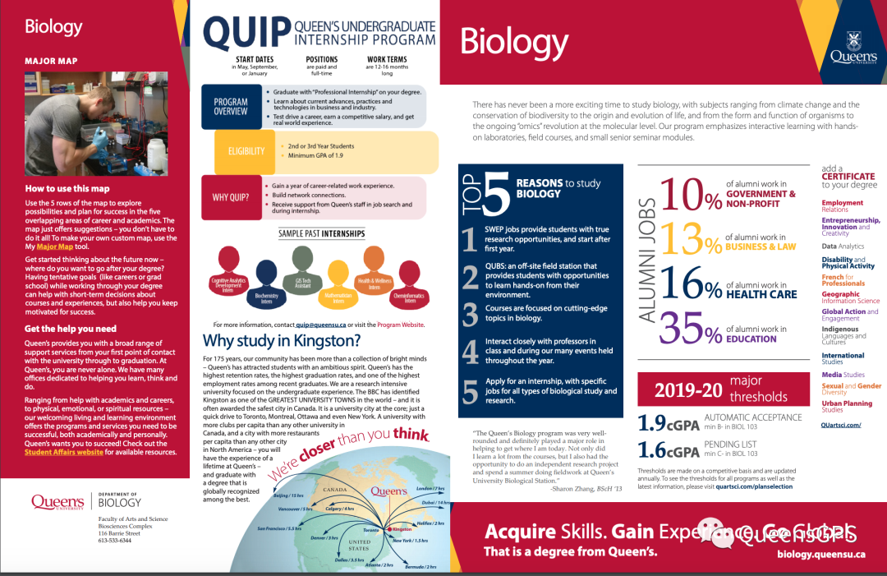

WELCOME TO BIOL 102
作为一门对高中生物有一定基础要求的课，看到它的第一眼，熊猫酱就优先考虑到了选Biol 102来作为一门选修课，毕竟本人高中三门科学分课时选的就是生物而且学的还不错！于是当年的我信誓旦旦地将秋季的Biol 102 和冬季的103 一口气全放进了我的“购物车”里。我依旧记得当时Biol103 还是排了老长的队才成功从waitlist里挤出来的呢！可当到了Queen‘s，上完第二个lecture以后，我突然开始意识到一个很严重问题。。。
这门课真的适合我吗？
1.
课程内容介绍
Bio 102 和 103 基本上可以算是一节课，前者讲cell（细胞）后者讲organism（生物体）。只不过它们分为了两个学期来上，每门课算3个学分一年可以拿6个学分。102 是秋季第一学期上而103是冬季第二学期上（因为熊猫酱只上过102 所以这里重点介绍102，是的你没想错，第二学期我果断把103 给drop了。。。＃－.－）但如果你是往生物专业这方面走的话，就请务必把两门课都选上！
Biol 102 是一门大一生物基础课也是进生物专业的必修课，在大一新生中算是比较热门的。Biol 102 的主要内容是介绍一些现代生物学的基本概念，包括了从分子到细胞的组织层次等主题。也就是说它无疑是我们高中生物的升级版，将一些基本概念和themes讲解的更加深入和透彻。
其中一些重点的主题有：
- 大分子分类/功能
- 细胞结构/功能
- 细胞呼吸
- DNA 复制
- 蛋白质
- 生物技术等
2.
课程形式
Biol 102 的授课形式主要是由两个部分组成：Lecture 大课 + Labs 实验课。每周两次的lecture基本上都会在生物教学楼Bioscience进行，教授大多会以ppt的形式来传递教学内容，学生在下面记笔记。一般来说教授会把每节课的ppt提前上传到Onq（有点像大学生的Google Classroom，里面有每门课的详细信息和教学内容）上以供学生预习/复习。（这里熊猫酱还是给各位新生提一下，虽然不知道为什么但是一学期的课程是分别由两名教授授课的，前6星期一位+后6星期一位，分工明确👍）Lab每周一次，是一节平均20+人数的小课。生物实验课不像化学实验课是“wet lab”， 它不需要带护目镜或者实验服，也不需要写lab report，课上内容更多的是小组case study，来巩固lecture上讲的知识点。可不要小看这些labs，它们可是占了三分之一的总成绩呢 ！每节lab会有一个相应的主题和需要完成的小型assignment在下课之前上交，所以不会留作业。因为是小组assignment所以这时抱紧大佬大腿是很有必要的！
3.
课程构成即评分标准
除了lecture和labs，这门课一学期会有四个online quizzes，大概十几道选择题通常是课上讲到过的，可以自己做也可以找小伙伴一起（占比十几%）；然后每周需要在网上做每个chapter的练习题（完成就是满分8%）；两次lecture上的随堂考，占10%，虽然也是选择题但是出的题目都是大题，需要完全理解知识并运用的，如果没有好好复习的话可能连题目也看不懂（如果你隔壁坐了个大佬就另当别论）；还有每节课讲课前老师会出几道Qlicker题目复习一下上堂课的内容，这个是需要电脑操作的，也是选择题每个人选一个答案，选了也相当于是一次记attendance，只算完成分2%；最后的最后就是我们的final exam，总占比和labs一样也是三分之一，没错这门课**没有midterm！**但是没有的midterm的副作用就是到了考试周你需要用短暂的几天复习时间将整个学期的内容掌握，这可是一项大工程。。。
4.
总结+建议
总的来说，Biol 102 绝对不是一门可以划水的课。在高中基础上，它的知识点不知道扩展和复杂了多少倍，课程进展飞快，一节课一个topic。很多时候你会发现一个知识点还没完全弄明白就已经开始讲下一个了。而且众所周知，lecture通常是一两百人的大课，如果在课上有不明白的地方举手提问对于熊猫酱来说是非常有挑战性的，所以这里建议新生们一定要记好教授的office hour，找时间和老师面对面地把不懂的地方弄懂，不然的话你会发现后面的内容会越来越听不明白。另外建一个自己的study group真的是一个非常有效的方法，不管是考试复习，线上测试，还是小组作业，又或者只是想找个人梳理一下知识点，你的study group 都可以给予你一定程度上的帮助。
Biol 102在课程设置方面和很多其他课程一样注重偏独立学习和探索，同时让学生学会利用好线上线下丰富的资源。说到资源，熊猫酱最后悔的一件事就是开学的时候去书店买了一本Biol 102的实体教科书📗。因为这门课有很多网上的练习题需要有书里的access code才能登陆网站，本来我可以直接买code然后看网上的e-text，可是我当时觉得实体书看起来会方便一点所以还是把书买了。结果。。。总共看了没有10次。。。或许当你看着一本几千页的教科书，密密麻麻的字而且还是散装的，你就提不起劲翻开它吧。
对于奔着生物专业来的小伙伴们，熊猫酱提醒Queen's进生物专业的分数要求是在Biol 103 达到B而且整体GPA需要达到1.9。以下截图是生物的Major Map，更多详情可以参考Art&Sci 官网。

看到了这里，相信各位小伙伴们对于这门课也有了一定程度上的了解。在这里需要申明的是，以上叨叨纯属熊猫酱个人主观看法，分享了我上Biol 102 时的一些心得，并不代表能其他学生的看法。而今年因为疫情原因改为线上授课，课程结构和评分方面也会有相应的调整所以以上介绍仅作为参考。说了这么多，熊猫酱还是想告诉新生们，如果你不是冲着生物/科学方面的专业来的，或者对生物感兴趣，单单只是想选一门选修课凑学分的话，一定要谨慎选这门课作为选修或者合理安排自己的课程不要给自己太大的学业压力哦！笔芯❤️
THE END
文字 Nina
排版 Nina
编辑 容易
审核 TT Chris